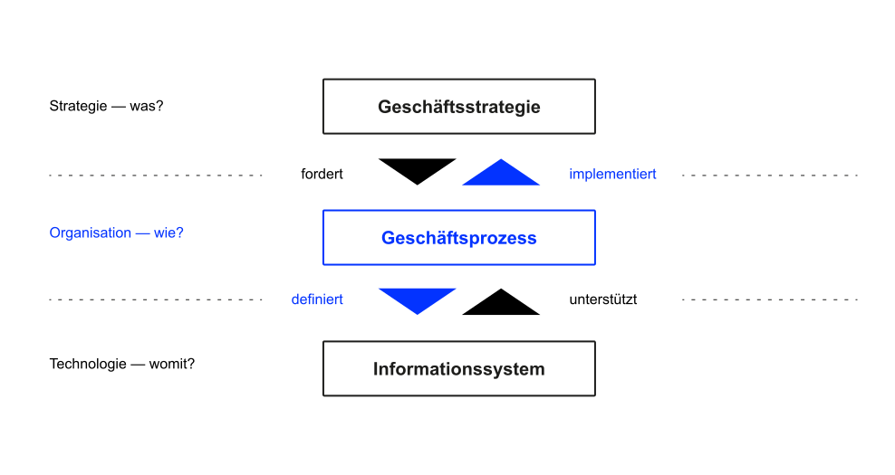
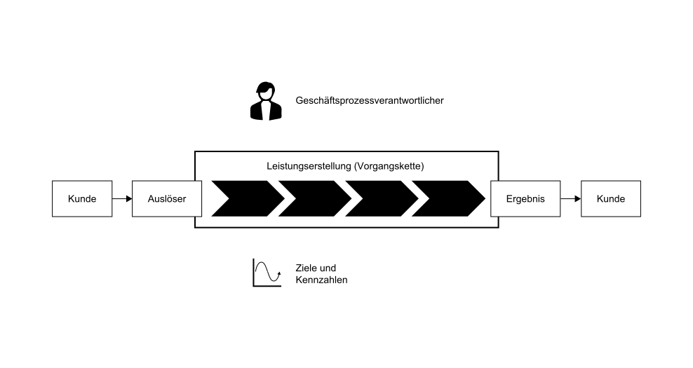

K7 Geschäftsprozesse
Grundzüge Informationsmanagement (GIM)
Andy Weeger
University of Applied Sciences Neu-Ulm
Motivation
If you can’t describe what you are doing as a process, you don’t know what you’re doing. William Edwards Demin, Physiker, Statistiker und Pionier im Qualitätsmanagement
Wenn Sie einen scheiß Prozess digitalisieren, haben Sie einen scheiß digitalen Prozess Thorsten Dirks, früherer CEO der Teléfonica Deutschland
Lernergebnisse
Nach dieser Einheit können Sie
- erklären, was Geschäftsprozesse sind und welche Bedeutung sie haben,
- Geschäftsprozesse und deren Abhängigkeiten im Business Engineering (Modell) verorten,
- Kern- und Unterstützungsprozesse unterscheiden und Beispiele geben,
- Aufgaben, Ziele und die Vorgehensweise des Geschäftsprozessmanagement (GPM) nennen und
- erläutern, weshalb GPM für ein Unternehmen wichtig ist.
Business Engineering
Definition
Zur Wiederholung und Einordnung: Unter Business Engineering versteht man die ingenieurmäßige Vorgehensweise bei der Gestaltung eines Unternehmens unter Berücksichtigung von Unternehmensstrategie, Geschäftsprozessen und betrieblichen Informationssystemen.
Business Engineering überspannt den kompletten Prozess von der Strategiefindung und der Gestaltung von Geschäftsmodellen bis zur optimalen Gestaltung der Abläufe sowie zugehöriger Anwendungssysteme (Abts und Mülder 2017; Leimeister 2021).
Visualisierung

Geschäftsprozesse
Definition
Ein Geschäftsprozess ist eine eine zielgerichtete zeitlich-logische Folge oder Vorgangskette von Aktivitäten (bzw. Tätigkeiten, Geschäftsvorgänge), die für das Unternehmen einen Beitrag zur Wertschöpfung leistet (Leimeister 2021).
In der Regel sind diese Prozesse aus der Geschäftsstrategie abgeleitet und am Kunden orientiert. Kundenorientierung bedeutet, dass Geschäftsprozesse entweder direkt oder indirekt einen Wert für Kunden erzeugen.
Merkmale
- Geschäftsprozesse bilden die Basis für die Wertschöpfung des Unternehmens. Sie dienen dem Kunden (Problemlösung) und dem Unternehmen (Gewinnerzielung).
- Geschäftsprozesse sind Routineaufgaben des Unternehmens, die weitestgehend Standards folgen und keine einmaligen Einzelprojekte.
- Jeder Geschäftsprozess hat einen Auslöser (bpsw. einen Auftrag) und ein Ergebnis (bspw. ausgeführter Auftrag und Rechnung für den Kunden).
- Die Aktivitäten des Geschäftsprozesses können (teilweise) parallel, wiederholt oder alternativ ausgeführt werden.
- Geschäftsprozesse queren Abteilungen und enden nicht an der Unternehmensgrenze. Deshalb sind an Geschäftsprozessen in der Regel mehrere organisatorische Einheiten des Unternehmens und gegebenenfalls externe Partner (bspw. Kunden beteiligt.
Komponenten

Kern- und Unterstützungsprozesse

Zieldimensionen

Beispiele

Geschäftsprozessmanagement
Definition
Das Geschäftsprozessmanagement ist dafür verantwortlich, Geschäftsprozesse so zu gestalten (Architektur), umzusetzen (Einführung), zu kontrollieren (Überwachung, Erhebung, Analyse) und zu verbessern, dass das Unternehmen die gesteckten Ziele möglichst effizient erreicht (Mertens u. a. 2016).
Das Geschäftprozessmanagement implementiert einen kontinuierlichen Verbesserungsprozess, der Geschäftsprozessse kontinuierlich überwacht, analysisert und verbessert.
Ablauf

Ziele
Das Geschäftsprozessmanagement möchte Effektivität und Effizienz des Unternehmens steigern.
In der Regel sind Unternehmen in einer Marktwirtschaft gewinnorientiert. Das Geschäftsprozessmanagement zielt in solchen Untenrehmen deshalb darauf ab, die Kosten durch höhere Effizienz zu senken und Umsätze durch eine bessere Kundenbindung zu erhöhen (Schmelzer und Sesselmann 2020).
Konkrete Ziele sollten aus den Unternehmenszielen abgeleitet (siehe Business Engineering Modell, Abbildung 1) und in spezifische und messbare Ziele und Kenngrößen für einzelne Geschäftsprozesse überführt werden.
✏️ Aufgaben
A1: Geschäftsprozesse und Anwendungssysteme
Weshalb ist die Geschäftsprozessanalyse zur Erfassung des Ist-Zustandes der Unternehmensprozesse (bspw. im Vertrieb) vor der Einführung eines Anwendungssystems (bspw. eines CRM-Systems) sinnvoll?
A2: Erhebung
Suchen Sie sich jeweils einen der folgenden Geschäftsprozesse aus und beschreiben Sie diesen den anderen Mitgliedern der Gruppe (verbale Beschreibung).
- Angebotsbearbeitung in einem Produktionsbetrieb
- Bearbeitung von Reklamationen in einem Online-Shop
- Durchführung eines Bewerbungsgesprächs in einem Unternehmen
- Optimierung eines Geschäftsprozesses in einem Unternehmen
- Verkauf eines Autos in einem Autohaus
Dokumentieren Sie Ihre Erkenntnisse in folgender Vorlage.
| Typ | Kern- oder Unterstützungsprozess |
| Auslöser | |
| Aktivitäten | |
| Ergebnis | |
| Prozessziele | |
| Verantwortlicher |
Weshalb handelt es sich um einen Geschäftsprozess?
A3: Analyse
Prozesse können anhand von drei wesentlichen Kriterien beurteilt werden. Zeigen Sie, anhand welcher Kennzahlen die drei Kriterien in drei der folgenden Prozesse beurteilt werden können.
- Angebotsbearbeitung in einem Produktionsbetrieb
- Bearbeitung von Reklamationen in einem Online-Shop
- Durchführung eines Bewerbungsgesprächs in einem Unternehmen
- Optimierung eines Geschäftsprozesses in einem Unternehmen
- Verkauf eines Autos in einem Autohaus
A4: Verbesserung
Vervollständigen Sie in untenstehender Tabelle die Möglichkeiten zur Optimierung/Restrukturierung von Prozessen.
| Konzept/Methode | Erläuterung | Beispiel |
|---|---|---|
| Weglassen | Zur Funktionserfüllung nicht notwendige Prozessschritte abschaffen | Abschaffung der Zeiterfassung durch Einführung der Vertrauensarbeitszeit |
| Auslagern | Vergabe der Buchführung und Bilanzierung an einen Steuerberater | |
| Zusammenfassen | ||
| Parallelisieren | ||
| Verlagern | Verlagerung von Prozessschritten um bspw. Flaschenhälse zu vermeiden | |
| Beschleunigen | Versand von Rechnungen per Mail statt per Post | |
| Ergänzen | ||
| Schleifen vermeiden | Verzicht auf Wiederholung von Teilschritten eines Prozesses |
A5: Analyse und Verbesserung
Ein fiktiver Maschinenhersteller organisiert seine Auftragsbearbeitung wie folgt:
- Der Prozess beginnt beim Vertriebsleiter, der sich persönlich um eingehende Anfragen der Kunden kümmert.
- Danach wird das Angebot vom Sachbearbeiter A an den Kunden versandt. Bevor das Angebot verschickt wird, wird es vom Vertriebsleiter kontrolliert. Da der Vertriebsleiter nicht immer anwesend ist, kann es vorkommen, dass ein vom Sachbearbeiter A fertig erstelltes Angebot einige Tage liegen bleibt.
- Wenn der Kunde eine Bestellung vornimmt, wird diese vom Sachbearbeiter C manuell geprüft und danach vom Sachbearbeiter D im Auftragsbearbeitungssystem erfasst.
- Der Kunde erhält eine Auftragsbestätigung, nachdem der Vertriebsleiter den Auftrag gesehen und freigegeben hat.
- Nach der Erfassung des Auftrages geht der Auftrag an den Leiter der Logistikabteilung. Dieser entscheidet persönlich, ob ein Teil vom Lager entnommen werden kann, beschafft werden muss oder gar noch zu produzieren ist.
- Falls er sich unsicher ist, fragt er beim Vorstand nach.
- Der Lagerleiter erhält daraufhin den Auftrag, das Material auszuliefern. Wenn er an diesem Tag nicht im Betrieb anwesend ist, übergibt er den Auftrag erst am folgenden Werktag an einen seiner Sachbearbeiter (z. B. H.)
- Der Sachbearbeiter (hier H) entnimmt das Teil, versendet es an den Kunden und löst eine Nachbestellung des Ersatzteiles beim zuständigen Lieferanten aus.
- Nach dem Versand übermittelt Sachbearbeiter H im Lager seinem Vorgesetzten die Abgangsbuchung. Dieser prüft den Beleg und verschickt ihn an den Leiter des Rechnungswesens.
- Der Leiter Rechnungswesen gibt den Beleg an den Leiter der Abteilung Buchhaltung und dieser wiederum an einen seiner Sachbearbeiter. Da der Leiter Rechnungswesen häufig vom Vorstand für Planungsaufgaben eingesetzt wird, bleiben die Belege häufig einige Tage liegen.
- Der Sachbearbeiter M erstellt in diesem Fall die Rechnung und verschickt sie an den Kunden.
Analysieren Sie den Prozess, identifizieren Sie Optimierungspotenziale und Schlagen Sie Verbesserungsmöglichkeiten im Sinne der Prozessoptimierung vor.